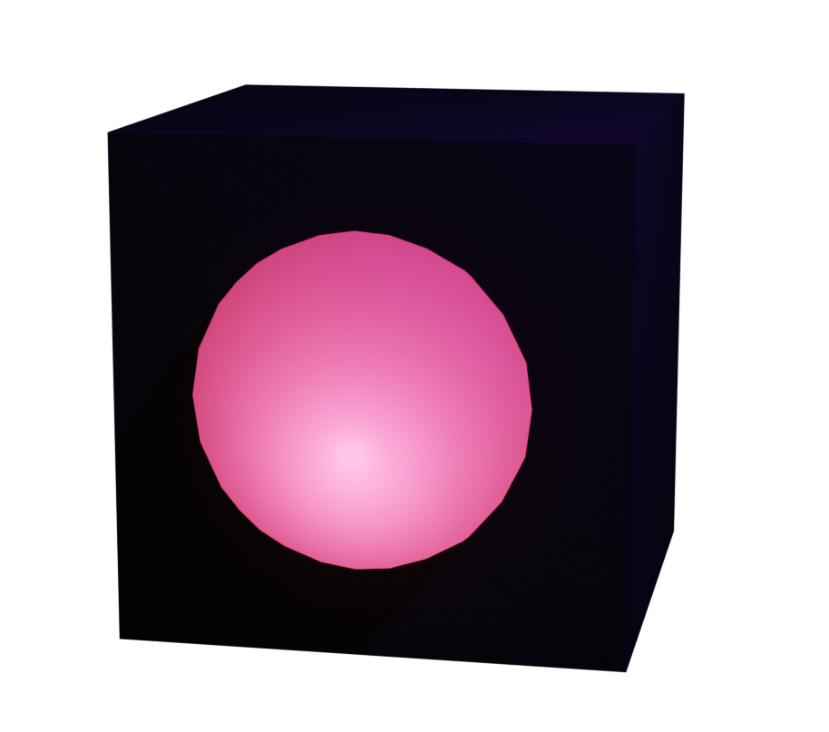

The passage around is dark and damp, leading further into the ruined tower. Deeper and deeper, below the ground’s surface. You continue your descent, unsure of which direction you are heading after the many twists and turns. A faint glow appears ahead. As you approach, a portal materializes, locked behind a gate.
This portal is blocked by an energetic door. To unlock it, configure the molecule to be in its lowest energy state. Click the door to rotate. Then, press the button.
